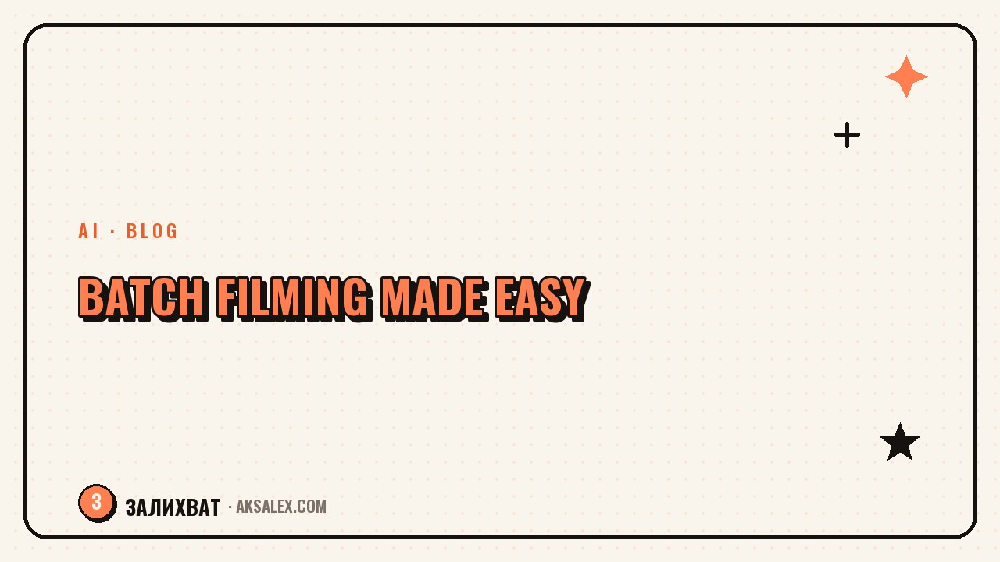

Batch Filming: Shoot a Week of Content in One Go

Why batching saves your nerves, not just hours
Every time you step in front of the camera, the real cost isn't the time - it's the mental setup. You have to change clothes, do your makeup, get into the right headspace, set up the light, and then put everything back afterward. When you go through all that for a single video, most of the effort goes into prep and warming up, not the filming itself.
Batching removes that repetition. You get into work mode once and shoot five to ten videos in a row while you're still warmed up and on your game. The third video feels easier than the first, and by the fifth you're almost on autopilot. That's exactly why people who switch to batching stop burning out on the daily grind.
You're not tired from filming - you're tired from starting it over every single day. Batching gives you one start instead of seven.
Prep: without it, batching falls apart
The biggest mistake is sitting down in front of the camera and trying to figure out what to say. Improvising eats up all the time you saved. So batching starts at the desk: you sketch out your topics ahead of time and at least a bullet-point plan for each video. Not a word-for-word script, just the anchor points - the hook, two or three ideas, a takeaway.
What to prepare before filming
- A list of topics for 7-10 videos, grouped by theme.
- A short plan for each video: the opening line and three anchor points.
- One or two outfits so the videos don't all look shot in the same minute.
- A charged phone or camera, a clean lens, and free storage space.
- Window light during the day or a lamp in the evening - even, with no harsh shadows.
It's easy to draft those plans with an AI tool: give it your niche and ask for 10 topics plus talking points for each. In five minutes you get a framework you just have to tweak into your own voice. That way prep stops being a separate, exhausting day of its own.
The shooting day, step by step
Block off a solid stretch of time when no one will interrupt you: while the baby sleeps, early morning, or in the evening. Set up your phone, check the framing and sound with a test take, then work straight down your list without skipping around.
Shoot each video in two or three takes and move right on to the next. Don't rewatch the footage between takes - it breaks your rhythm and eats time. Save the review for later. Change your look every three or four videos: swap your top, let your hair down, move the camera to a different wall, and your feed stops looking like an assembly line.
The order within the day
- Start with the most demanding videos, while you still have energy and a fresh face.
- Shoot similar formats back to back - fewer mental switches.
- Group videos with the same outfit so you're not changing clothes back and forth.
- Leave a buffer of two or three spare takes in case you stumble over your words.
How much you can realistically shoot in one session
Don't chase a record. Five strong videos beat ten forced ones where by the end you're pushing every word out. Go by how you feel: the moment your delivery gets flat, stop. Below is a table of realistic benchmarks for different formats.
| Format | Per session | Time per session | Lasts for |
|---|---|---|---|
| Talking head, 20-40 sec | 6-10 videos | 1.5-2 hours | 1-2 weeks |
| Video with text and b-roll | 4-6 videos | 2-2.5 hours | 1 week |
| Photos for posts | 20-30 shots | 1 hour | 2-3 weeks |
| Story drafts | 10-15 pieces | 40 minutes | 1 week |
Sort what you've shot into clearly named folders right away, so you're not later hunting for the right take among dozens of files. Editing and publishing are also handy to do in a batch on another day - then filming and post-production don't get in each other's way.
Common mistakes that keep batching from working
The first is shooting without a plan and hoping for inspiration. The second is chasing quantity and posting ten weak videos. The third is forgetting to change your look and ending up with a feed where it's obvious everything was shot at once. The fourth is putting off sorting the footage and then drowning in unsorted files.
- No plan - improvising eats up all the time you saved.
- One outfit for the whole batch - the feed looks monotonous.
- Filming on your last legs - the final videos drag everything down.
- Unlabeled files - you lose an hour searching during editing.
It all comes down to prep. Spend half an hour on a plan and on organizing your files, and the shooting day itself goes smoothly - and you walk away with content you'd be happy to feed your feed for a week.
Frequently Asked Questions
How often should you do a batch shoot?
Usually once a week or once every two weeks. Base it on how many videos you post and how many you can shoot in one comfortable session without losing quality.
Won't the feed look monotonous?
It won't, if you change your outfit and background every three or four videos and space the posts out across days. Viewers see one video in the feed, not the whole batch at once.
What if I can't shoot everything in one day?
That's fine. Shoot as much as your freshness allows and move the rest. Five lively videos are worth more than ten forced ones shot on fumes.
Do you need expensive lighting and gear for batching?
No. Daylight from a window or a single lamp and a phone with a clean lens are enough. Stability and clean sound matter more than an expensive camera.
How do you remember what each video is about?
Keep a list of topics with short talking points in front of you and work down it top to bottom. A bullet plan in your notes or on paper solves the problem of losing your train of thought between takes.
Enjoyed this one? Here's what to read next. How to make text from a neural network sound like you: techniques to bring it to life and find your voice.
Read the article →not by hand